%matplotlib inline
import numpy as np
import scipy as sp
import matplotlib as mpl
import matplotlib.cm as cm
import matplotlib.pyplot as plt
import pandas as pd
pd.set_option('display.width', 500)
pd.set_option('display.max_columns', 100)
pd.set_option('display.notebook_repr_html', True)
import seaborn as sns
sns.set_style("whitegrid")
sns.set_context("poster")
import pymc as pm
import arviz as azBayesian Workflow: Zero-Inflated Poisson
Prior selection, simulation-based calibration, and posterior predictive checks for GLMs.
bayesian
regression
models
A complete Bayesian workflow applied to a zero-inflated Poisson model of monks producing manuscripts. Covers prior predictive checks, simulation-based calibration, identifiability diagnosis, and posterior predictive validation across progressively refined models.
Monks working on manuscripts
From McElreath:
Now imagine that the monks take breaks on some days. On those days, no manuscripts are completed. Instead, the wine cellar is opened and more earthly delights are practiced. As the monastery owner, you’d like to know how often the monks drink. The obstacle for inference is that there will be zeros on honest non-drinking days, as well, just by chance. So how can you estimate the number of days spent drinking?
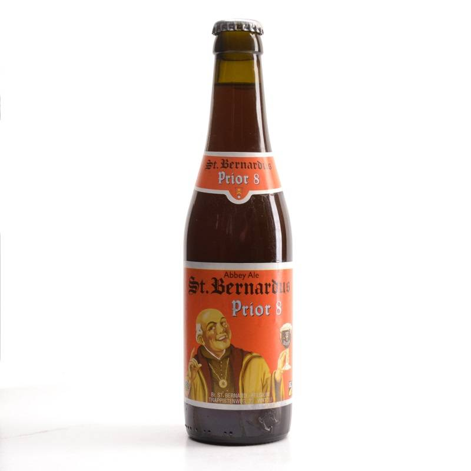
The kind of model used to solve this problem is called a Mixture Model. We’ll see these in more detail next week, but here is a simple version that arises in Poisson regression.
Let \(p\) be the probability that the monks spend the day drinking, and \(\lambda\) be the mean number of manuscripts completed, when they work.
Likelihood
The likelihood of observing 0 manuscripts produced is is:
\[\cal{L}(y=0) = p + (1-p) e^{-\lambda},\]
since the Poisson likelihood of \(y\) is $ ^y exp(–)/y!$
Likelihood of a non-zero \(y\) is:
\[\cal{L}(y \ne 0) = (1-p) \frac{\lambda^y e^{-\lambda}}{y!}\]
This model can be described by this diagram, taken from Mc-Elreath
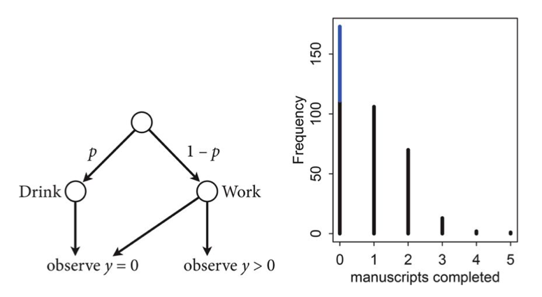
Generating the data
We’re throwing bernoullis for whether a given day in the year is a drinking day or not…
from scipy.stats import binom
p_drink=0.2
rate_work=1
N=365
drink=binom.rvs(n=1, p=p_drink, size=N)
drinkarray([0, 0, 0, 0, 0, 1, 0, 0, 0, 0, 0, 1, 0, 0, 0, 0, 0, 1, 0, 0, 0, 0,
0, 0, 0, 0, 0, 0, 1, 0, 0, 0, 0, 1, 0, 0, 1, 0, 0, 0, 1, 0, 0, 1,
1, 0, 0, 0, 0, 0, 0, 0, 0, 0, 0, 0, 0, 0, 0, 1, 0, 0, 1, 0, 1, 0,
0, 0, 0, 1, 0, 0, 0, 0, 0, 1, 1, 0, 0, 0, 0, 1, 0, 0, 0, 0, 0, 0,
0, 1, 1, 0, 1, 0, 0, 0, 1, 1, 0, 0, 0, 0, 1, 1, 0, 0, 0, 0, 0, 0,
1, 1, 0, 0, 1, 0, 0, 1, 0, 0, 1, 0, 0, 0, 1, 0, 0, 0, 0, 0, 0, 0,
0, 0, 0, 0, 0, 0, 0, 0, 0, 0, 0, 0, 1, 0, 0, 0, 0, 1, 0, 0, 0, 1,
0, 0, 0, 0, 1, 1, 0, 0, 1, 0, 1, 0, 0, 1, 0, 0, 0, 0, 0, 1, 1, 0,
0, 0, 0, 0, 0, 1, 1, 0, 0, 0, 0, 0, 0, 0, 0, 0, 0, 0, 1, 0, 1, 0,
0, 0, 0, 1, 0, 0, 1, 1, 0, 0, 1, 0, 0, 0, 1, 0, 1, 0, 0, 0, 0, 1,
0, 1, 0, 0, 0, 0, 0, 0, 0, 0, 0, 0, 0, 0, 1, 0, 0, 1, 0, 0, 0, 0,
0, 0, 0, 1, 0, 0, 0, 0, 0, 0, 1, 0, 1, 1, 0, 0, 0, 0, 0, 0, 0, 0,
0, 0, 0, 0, 0, 0, 0, 0, 0, 0, 0, 0, 1, 1, 0, 1, 0, 0, 1, 0, 0, 0,
0, 1, 0, 0, 0, 0, 0, 1, 1, 1, 0, 0, 0, 0, 0, 1, 0, 1, 0, 0, 0, 0,
0, 0, 0, 0, 0, 0, 0, 0, 0, 0, 0, 0, 0, 0, 0, 0, 1, 0, 1, 0, 0, 0,
0, 0, 0, 0, 0, 1, 0, 0, 1, 1, 1, 0, 0, 0, 0, 0, 0, 0, 0, 0, 0, 0,
0, 1, 0, 1, 0, 0, 1, 0, 0, 0, 0, 0, 0])On days we dont drink, we produce some work…though it might be 0 work…
from scipy.stats import poisson
y = ( 1 - drink)*poisson.rvs(mu=rate_work, size=N)
yarray([0, 3, 0, 1, 1, 0, 0, 3, 2, 0, 1, 0, 4, 1, 2, 1, 3, 0, 0, 2, 2, 1,
4, 0, 3, 0, 1, 2, 0, 1, 0, 0, 0, 0, 1, 1, 0, 2, 2, 0, 0, 1, 0, 0,
0, 1, 2, 0, 2, 2, 0, 2, 0, 0, 0, 3, 0, 1, 2, 0, 3, 2, 0, 0, 0, 2,
0, 0, 4, 0, 4, 1, 1, 2, 0, 0, 0, 1, 1, 0, 0, 0, 0, 2, 5, 0, 1, 0,
0, 0, 0, 0, 0, 2, 2, 2, 0, 0, 0, 1, 1, 0, 0, 0, 2, 0, 1, 1, 0, 0,
0, 0, 2, 3, 0, 2, 0, 0, 2, 1, 0, 1, 2, 0, 0, 0, 2, 1, 1, 0, 0, 1,
0, 1, 2, 2, 1, 3, 0, 3, 0, 1, 2, 0, 0, 0, 0, 1, 0, 0, 4, 0, 0, 0,
2, 1, 1, 0, 0, 0, 1, 0, 0, 2, 0, 0, 1, 0, 1, 1, 2, 0, 1, 0, 0, 0,
1, 1, 1, 1, 1, 0, 0, 2, 1, 1, 2, 2, 1, 0, 2, 2, 2, 1, 0, 1, 0, 0,
2, 0, 0, 0, 4, 1, 0, 0, 0, 0, 0, 0, 2, 2, 0, 1, 0, 2, 0, 1, 1, 0,
1, 0, 1, 1, 0, 0, 3, 1, 2, 0, 4, 1, 0, 0, 0, 0, 2, 0, 0, 1, 5, 0,
0, 0, 0, 0, 2, 1, 0, 0, 1, 0, 0, 2, 0, 0, 2, 1, 1, 1, 1, 0, 1, 0,
0, 2, 0, 0, 1, 1, 2, 0, 1, 1, 2, 3, 0, 0, 0, 0, 2, 1, 0, 2, 0, 3,
0, 0, 0, 4, 1, 0, 0, 0, 0, 0, 1, 2, 1, 0, 1, 0, 2, 0, 0, 0, 0, 1,
1, 1, 1, 2, 0, 0, 2, 2, 0, 0, 0, 1, 3, 0, 1, 1, 0, 2, 0, 1, 0, 1,
0, 0, 0, 0, 0, 0, 0, 1, 0, 0, 0, 1, 1, 1, 2, 1, 0, 1, 1, 1, 1, 1,
0, 0, 0, 0, 0, 5, 0, 1, 1, 2, 1, 1, 2])Lets manufacture a histogram of manuscripts produced in a day.
zeros_drink=np.sum(drink)
a=drink==0
b=y==0
zeros_work=np.sum(a & b)
zeros_drink, zeros_work, np.sum(b)(np.int64(76), np.int64(108), np.int64(184))plt.hist(zeros_work*[0], bins=np.arange(10))
plt.hist(y, bins=np.arange(10), alpha=0.5)(array([184., 97., 60., 13., 8., 3., 0., 0., 0.]),
array([0., 1., 2., 3., 4., 5., 6., 7., 8., 9.]),
<BarContainer object of 9 artists>)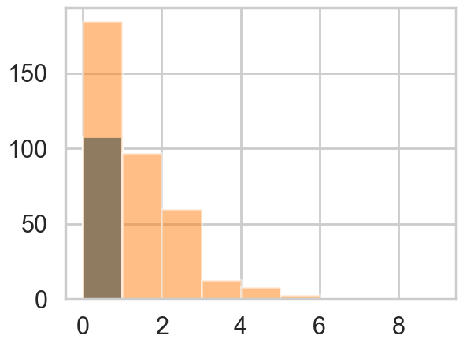
Lets throw in some domain expertise
A survey of Abbey Heads has told us, that the most a monk could produce, ever, was 10 manuscripts in a day.
First model: just do a simple poisson
# theano import removed - not needed in modern pymcdef model_poisson(observed=None):
with pm.Model() as model:
lam=pm.HalfNormal("lambda", sigma=100)
like = pm.Poisson("obsv", mu=lam, observed=observed)
return modelmodel0 = model_poisson(observed=y)with model0:
trace0=pm.sample(3000)Initializing NUTS using jitter+adapt_diag...Multiprocess sampling (4 chains in 4 jobs)NUTS: [lambda]/Users/rahul/Library/Caches/uv/archive-v0/WJgPh5nRFVZl0DU9tt8M7/lib/python3.14/site-packages/rich/live.py:260:
UserWarning: install "ipywidgets" for Jupyter support
warnings.warn('install "ipywidgets" for Jupyter support')
Sampling 4 chains for 1_000 tune and 3_000 draw iterations (4_000 + 12_000 draws total) took 1 seconds.az.plot_trace(trace0);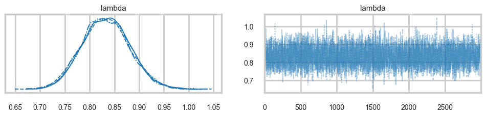
az.summary(trace0)| mean | sd | hdi_3% | hdi_97% | mcse_mean | mcse_sd | ess_bulk | ess_tail | r_hat | |
|---|---|---|---|---|---|---|---|---|---|
| lambda | 0.833 | 0.048 | 0.744 | 0.921 | 0.001 | 0.0 | 5480.0 | 8589.0 | 1.0 |
from scipy import stats
lbda = np.linspace(0, 200, num=1000)
normpdf = stats.norm(loc=0,scale=100).pdf(lbda)
plt.plot(lbda, normpdf, lw=2)
plt.xlabel("lambda");
plt.ylabel("Prior Density");
plt.fill_between(lbda,0.,normpdf)
plt.axvline(10, 0 ,1, c="r", lw=3);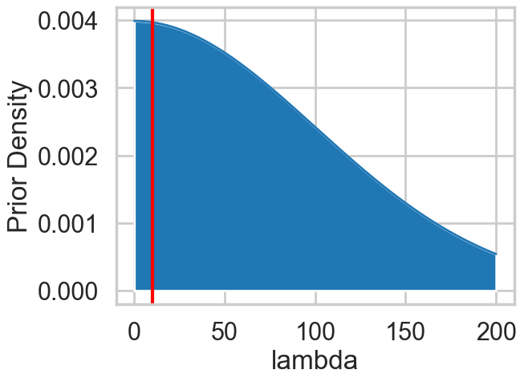
Some proper workflow
Notice the prior specification though: at the 3\(\sigma\) level, \(\lambda\) could range from 0 to 300, ie from 0 to an extremely large number to an extremely large “mean” of counts. Not possible. Indeed, the max count is around 10. For a poisson, since the variance is equal to the mean, this means that (at 3$):
\[max(\lambda + 3\sqrt{\lambda}) < 10\]
Any prior should only take us marginally outside this range:
4+3*np.sqrt(4)np.float64(10.0)from scipy import stats
lbda = np.linspace(0, 20, num=1000)
normpdf = stats.norm(loc=0,scale=4).pdf(lbda)
plt.plot(lbda, normpdf, lw=2)
plt.xlabel("lambda");
plt.ylabel("Prior Density");
plt.fill_between(lbda,0.,normpdf)
plt.axvline(10, 0 ,1, c="r", lw=3);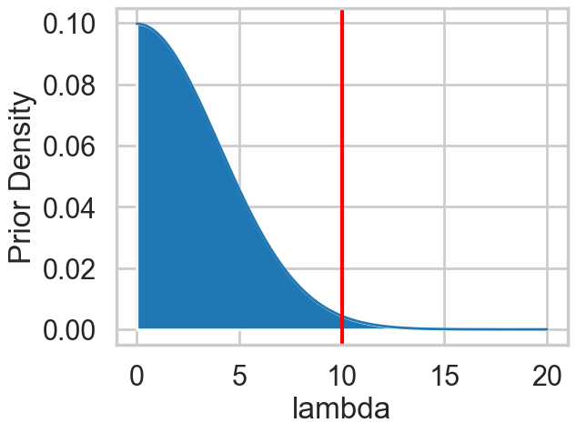
pois = stats.poisson.rvs(stats.halfnorm(scale=4).rvs(1000))
plt.hist(pois)(array([377., 250., 177., 91., 56., 26., 14., 5., 0., 4.]),
array([ 0. , 1.9, 3.8, 5.7, 7.6, 9.5, 11.4, 13.3, 15.2, 17.1, 19. ]),
<BarContainer object of 10 artists>)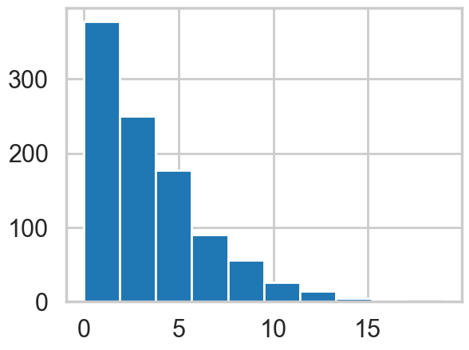
np.mean(pois > 10)np.float64(0.032)Limiting the prior
Thus a prior should mainly limit \(\lambda\) to values upto 4. To so this consider:
from scipy.stats import halfnorm
halfnorm.ppf(0.99, loc=0,scale=4)np.float64(10.303317214195602)def model_poisson1(sd, datasize, observed=None):
with pm.Model() as model:
lam=pm.HalfNormal("lambda", sigma=sd)
like = pm.Poisson("obsv", mu=lam, shape = datasize, observed=observed)
return modelSimulating the Bayesian Joint distribution
This should be way enough!, So lets go again:
N = y.shape[0]
N365model1_pr = model_poisson1(4, N, observed=None)with model1_pr:
trace1_pr = pm.sample_prior_predictive(500)Sampling: [lambda, obsv]trace1_pr.prior['lambda'].shape, trace1_pr.prior['obsv'].shape((1, 500), (1, 500, 365))plt.hist(trace1_pr.prior['lambda'].values.flatten());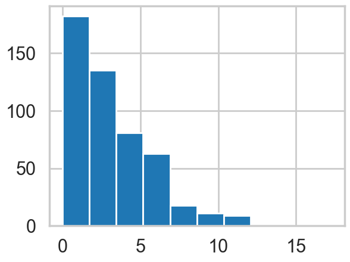
simy = trace1_pr.prior['obsv'].values.reshape(-1, N)simu_lbdas = trace1_pr.prior['lambda'].values.flatten()
simu_lbdas.shape, simy.shape((500,), (500, 365))simu_lbdas = stats.halfnorm(scale=4).rvs(500)
simy = np.zeros((500, y.shape[0]))
for i in range(500):
simy[i,:] = stats.poisson(simu_lbdas[i]).rvs(y.shape[0])x_max = 21
bins = np.arange(0,x_max)
hists = np.apply_along_axis(lambda a: np.histogram(a, bins=bins)[0], 1, simy)hists.shape #500 rows with 20 cols(500, 20)np.linspace(10,90,num=9, dtype=int)array([10, 20, 30, 40, 50, 60, 70, 80, 90])prctiles = np.percentile(hists,np.linspace(10,90,num=9, dtype=int),axis=0)bin_interp = np.linspace(0,x_max-1,num=(x_max-1)*10)
bin_interparray([ 0. , 0.10050251, 0.20100503, 0.30150754, 0.40201005,
0.50251256, 0.60301508, 0.70351759, 0.8040201 , 0.90452261,
1.00502513, 1.10552764, 1.20603015, 1.30653266, 1.40703518,
1.50753769, 1.6080402 , 1.70854271, 1.80904523, 1.90954774,
2.01005025, 2.11055276, 2.21105528, 2.31155779, 2.4120603 ,
2.51256281, 2.61306533, 2.71356784, 2.81407035, 2.91457286,
3.01507538, 3.11557789, 3.2160804 , 3.31658291, 3.41708543,
3.51758794, 3.61809045, 3.71859296, 3.81909548, 3.91959799,
4.0201005 , 4.12060302, 4.22110553, 4.32160804, 4.42211055,
4.52261307, 4.62311558, 4.72361809, 4.8241206 , 4.92462312,
5.02512563, 5.12562814, 5.22613065, 5.32663317, 5.42713568,
5.52763819, 5.6281407 , 5.72864322, 5.82914573, 5.92964824,
6.03015075, 6.13065327, 6.23115578, 6.33165829, 6.4321608 ,
6.53266332, 6.63316583, 6.73366834, 6.83417085, 6.93467337,
7.03517588, 7.13567839, 7.2361809 , 7.33668342, 7.43718593,
7.53768844, 7.63819095, 7.73869347, 7.83919598, 7.93969849,
8.04020101, 8.14070352, 8.24120603, 8.34170854, 8.44221106,
8.54271357, 8.64321608, 8.74371859, 8.84422111, 8.94472362,
9.04522613, 9.14572864, 9.24623116, 9.34673367, 9.44723618,
9.54773869, 9.64824121, 9.74874372, 9.84924623, 9.94974874,
10.05025126, 10.15075377, 10.25125628, 10.35175879, 10.45226131,
10.55276382, 10.65326633, 10.75376884, 10.85427136, 10.95477387,
11.05527638, 11.15577889, 11.25628141, 11.35678392, 11.45728643,
11.55778894, 11.65829146, 11.75879397, 11.85929648, 11.95979899,
12.06030151, 12.16080402, 12.26130653, 12.36180905, 12.46231156,
12.56281407, 12.66331658, 12.7638191 , 12.86432161, 12.96482412,
13.06532663, 13.16582915, 13.26633166, 13.36683417, 13.46733668,
13.5678392 , 13.66834171, 13.76884422, 13.86934673, 13.96984925,
14.07035176, 14.17085427, 14.27135678, 14.3718593 , 14.47236181,
14.57286432, 14.67336683, 14.77386935, 14.87437186, 14.97487437,
15.07537688, 15.1758794 , 15.27638191, 15.37688442, 15.47738693,
15.57788945, 15.67839196, 15.77889447, 15.87939698, 15.9798995 ,
16.08040201, 16.18090452, 16.28140704, 16.38190955, 16.48241206,
16.58291457, 16.68341709, 16.7839196 , 16.88442211, 16.98492462,
17.08542714, 17.18592965, 17.28643216, 17.38693467, 17.48743719,
17.5879397 , 17.68844221, 17.78894472, 17.88944724, 17.98994975,
18.09045226, 18.19095477, 18.29145729, 18.3919598 , 18.49246231,
18.59296482, 18.69346734, 18.79396985, 18.89447236, 18.99497487,
19.09547739, 19.1959799 , 19.29648241, 19.39698492, 19.49748744,
19.59798995, 19.69849246, 19.79899497, 19.89949749, 20. ])prctiles_interp = np.repeat(prctiles, 10,axis=1)c_light ="#DCBCBC"
c_light_highlight ="#C79999"
c_mid ="#B97C7C"
c_mid_highlight ="#A25050"
c_dark ="#8F2727"
c_dark_highlight ="#7C0000"
for i,color in enumerate([c_light,c_light_highlight,c_mid,c_mid_highlight]):
plt.fill_between(bin_interp,prctiles_interp[i,:],prctiles_interp[-1-i,:],alpha=1.0,color=color);
plt.plot(bin_interp,prctiles_interp[4,:],color=c_dark_highlight);
plt.axvline(x=10,ls='-',lw=2,color='k');
plt.xlabel('y');
plt.title('Prior predictive distribution');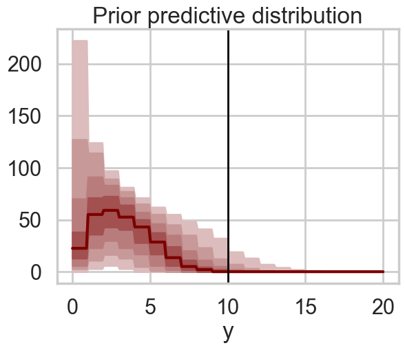
plt.plot(simu_lbdas)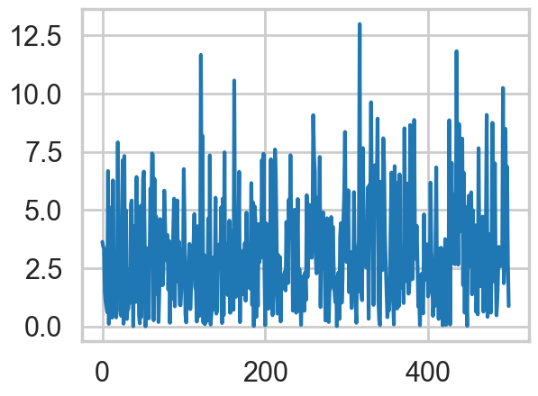
choices = np.random.choice(simu_lbdas.shape[0], 100)
choicesarray([287, 361, 192, 340, 446, 270, 154, 487, 101, 109, 191, 277, 312,
128, 468, 356, 472, 111, 178, 428, 282, 487, 164, 88, 285, 90,
180, 361, 87, 159, 495, 215, 432, 124, 85, 269, 210, 85, 162,
184, 391, 177, 267, 330, 398, 214, 195, 88, 11, 130, 294, 26,
2, 34, 358, 469, 65, 497, 311, 374, 279, 456, 305, 445, 35,
264, 483, 54, 236, 222, 375, 499, 469, 448, 108, 339, 262, 272,
440, 351, 239, 25, 181, 37, 333, 174, 499, 289, 128, 330, 47,
36, 119, 270, 161, 222, 311, 312, 428, 443])plt.plot(simu_lbdas, alpha=0.3)
plt.plot(choices, simu_lbdas[choices], 'o')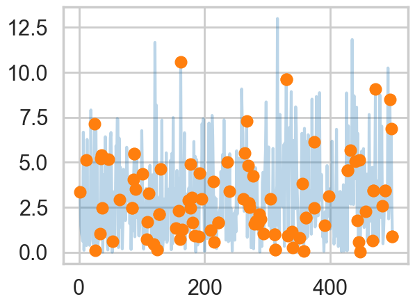
simlamsmall = simu_lbdas[choices]
simysmall = simy[choices,:]
simysmall.shape(100, 365)junkm = model_poisson1(4, y.shape[0], observed=simy[53,:])
with junkm:
junkt = pm.sample(3000, tune=1000)Initializing NUTS using jitter+adapt_diag...Multiprocess sampling (4 chains in 4 jobs)NUTS: [lambda]/Users/rahul/Library/Caches/uv/archive-v0/WJgPh5nRFVZl0DU9tt8M7/lib/python3.14/site-packages/rich/live.py:260:
UserWarning: install "ipywidgets" for Jupyter support
warnings.warn('install "ipywidgets" for Jupyter support')
Sampling 4 chains for 1_000 tune and 3_000 draw iterations (4_000 + 12_000 draws total) took 1 seconds.There were 7 divergences after tuning. Increase `target_accept` or reparameterize.simu_lbdas[53]np.float64(0.0021002434617216218)az.plot_trace(junkt);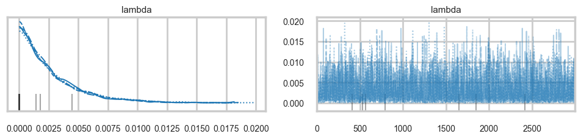
az.summary(junkt)| mean | sd | hdi_3% | hdi_97% | mcse_mean | mcse_sd | ess_bulk | ess_tail | r_hat | |
|---|---|---|---|---|---|---|---|---|---|
| lambda | 0.003 | 0.003 | 0.0 | 0.008 | 0.0 | 0.0 | 2549.0 | 2141.0 | 1.0 |
# Check convergence via rhat (replaces trace.report.ok)
summary = az.summary(junkt, var_names=['lambda'])
print("Rhat:", summary['r_hat'].values[0])
summary['r_hat'].values[0] < 1.05Rhat: 1.0np.True_junkt.posterior['lambda'].values.flatten().shape(12000,)R=100
sbcpost = np.zeros((R, 12000))
problems = [False]*R
summaries = []
for i in range(R):
m = model_poisson1(4, y.shape[0], observed=simysmall[i,:])
idata_i = pm.sample(3000, tune=1000, model=m, progressbar=False)
sbcpost[i,:] = idata_i.posterior['lambda'].values.flatten()
s = az.summary(idata_i, var_names=['lambda'])
summaries.append(s)
problems[i] = s['r_hat'].values[0] < 1.05Initializing NUTS using jitter+adapt_diag...Multiprocess sampling (4 chains in 4 jobs)NUTS: [lambda]Sampling 4 chains for 1_000 tune and 3_000 draw iterations (4_000 + 12_000 draws total) took 1 seconds.Initializing NUTS using jitter+adapt_diag...Multiprocess sampling (4 chains in 4 jobs)NUTS: [lambda]Sampling 4 chains for 1_000 tune and 3_000 draw iterations (4_000 + 12_000 draws total) took 1 seconds.Initializing NUTS using jitter+adapt_diag...Multiprocess sampling (4 chains in 4 jobs)NUTS: [lambda]Sampling 4 chains for 1_000 tune and 3_000 draw iterations (4_000 + 12_000 draws total) took 1 seconds.Initializing NUTS using jitter+adapt_diag...Multiprocess sampling (4 chains in 4 jobs)NUTS: [lambda]Sampling 4 chains for 1_000 tune and 3_000 draw iterations (4_000 + 12_000 draws total) took 1 seconds.Initializing NUTS using jitter+adapt_diag...Multiprocess sampling (4 chains in 4 jobs)NUTS: [lambda]Sampling 4 chains for 1_000 tune and 3_000 draw iterations (4_000 + 12_000 draws total) took 1 seconds.Initializing NUTS using jitter+adapt_diag...Multiprocess sampling (4 chains in 4 jobs)NUTS: [lambda]Sampling 4 chains for 1_000 tune and 3_000 draw iterations (4_000 + 12_000 draws total) took 1 seconds.Initializing NUTS using jitter+adapt_diag...Multiprocess sampling (4 chains in 4 jobs)NUTS: [lambda]Sampling 4 chains for 1_000 tune and 3_000 draw iterations (4_000 + 12_000 draws total) took 1 seconds.Initializing NUTS using jitter+adapt_diag...Multiprocess sampling (4 chains in 4 jobs)NUTS: [lambda]Sampling 4 chains for 1_000 tune and 3_000 draw iterations (4_000 + 12_000 draws total) took 1 seconds.Initializing NUTS using jitter+adapt_diag...Multiprocess sampling (4 chains in 4 jobs)NUTS: [lambda]Sampling 4 chains for 1_000 tune and 3_000 draw iterations (4_000 + 12_000 draws total) took 1 seconds.Initializing NUTS using jitter+adapt_diag...Multiprocess sampling (4 chains in 4 jobs)NUTS: [lambda]Sampling 4 chains for 1_000 tune and 3_000 draw iterations (4_000 + 12_000 draws total) took 1 seconds.Initializing NUTS using jitter+adapt_diag...Multiprocess sampling (4 chains in 4 jobs)NUTS: [lambda]Sampling 4 chains for 1_000 tune and 3_000 draw iterations (4_000 + 12_000 draws total) took 1 seconds.Initializing NUTS using jitter+adapt_diag...Multiprocess sampling (4 chains in 4 jobs)NUTS: [lambda]Sampling 4 chains for 1_000 tune and 3_000 draw iterations (4_000 + 12_000 draws total) took 1 seconds.Initializing NUTS using jitter+adapt_diag...Multiprocess sampling (4 chains in 4 jobs)NUTS: [lambda]Sampling 4 chains for 1_000 tune and 3_000 draw iterations (4_000 + 12_000 draws total) took 1 seconds.Initializing NUTS using jitter+adapt_diag...Multiprocess sampling (4 chains in 4 jobs)NUTS: [lambda]Sampling 4 chains for 1_000 tune and 3_000 draw iterations (4_000 + 12_000 draws total) took 1 seconds.Initializing NUTS using jitter+adapt_diag...Multiprocess sampling (4 chains in 4 jobs)NUTS: [lambda]Sampling 4 chains for 1_000 tune and 3_000 draw iterations (4_000 + 12_000 draws total) took 1 seconds.Initializing NUTS using jitter+adapt_diag...Multiprocess sampling (4 chains in 4 jobs)NUTS: [lambda]Sampling 4 chains for 1_000 tune and 3_000 draw iterations (4_000 + 12_000 draws total) took 1 seconds.Initializing NUTS using jitter+adapt_diag...Multiprocess sampling (4 chains in 4 jobs)NUTS: [lambda]Sampling 4 chains for 1_000 tune and 3_000 draw iterations (4_000 + 12_000 draws total) took 1 seconds.Initializing NUTS using jitter+adapt_diag...Multiprocess sampling (4 chains in 4 jobs)NUTS: [lambda]Sampling 4 chains for 1_000 tune and 3_000 draw iterations (4_000 + 12_000 draws total) took 1 seconds.Initializing NUTS using jitter+adapt_diag...Multiprocess sampling (4 chains in 4 jobs)NUTS: [lambda]Sampling 4 chains for 1_000 tune and 3_000 draw iterations (4_000 + 12_000 draws total) took 1 seconds.Initializing NUTS using jitter+adapt_diag...Multiprocess sampling (4 chains in 4 jobs)NUTS: [lambda]Sampling 4 chains for 1_000 tune and 3_000 draw iterations (4_000 + 12_000 draws total) took 1 seconds.Initializing NUTS using jitter+adapt_diag...Multiprocess sampling (4 chains in 4 jobs)NUTS: [lambda]Sampling 4 chains for 1_000 tune and 3_000 draw iterations (4_000 + 12_000 draws total) took 1 seconds.Initializing NUTS using jitter+adapt_diag...Multiprocess sampling (4 chains in 4 jobs)NUTS: [lambda]Sampling 4 chains for 1_000 tune and 3_000 draw iterations (4_000 + 12_000 draws total) took 1 seconds.Initializing NUTS using jitter+adapt_diag...Multiprocess sampling (4 chains in 4 jobs)NUTS: [lambda]Sampling 4 chains for 1_000 tune and 3_000 draw iterations (4_000 + 12_000 draws total) took 1 seconds.Initializing NUTS using jitter+adapt_diag...Multiprocess sampling (4 chains in 4 jobs)NUTS: [lambda]Sampling 4 chains for 1_000 tune and 3_000 draw iterations (4_000 + 12_000 draws total) took 1 seconds.Initializing NUTS using jitter+adapt_diag...Multiprocess sampling (4 chains in 4 jobs)NUTS: [lambda]Sampling 4 chains for 1_000 tune and 3_000 draw iterations (4_000 + 12_000 draws total) took 1 seconds.Initializing NUTS using jitter+adapt_diag...Multiprocess sampling (4 chains in 4 jobs)NUTS: [lambda]Sampling 4 chains for 1_000 tune and 3_000 draw iterations (4_000 + 12_000 draws total) took 1 seconds.Initializing NUTS using jitter+adapt_diag...Multiprocess sampling (4 chains in 4 jobs)NUTS: [lambda]Sampling 4 chains for 1_000 tune and 3_000 draw iterations (4_000 + 12_000 draws total) took 1 seconds.Initializing NUTS using jitter+adapt_diag...Multiprocess sampling (4 chains in 4 jobs)NUTS: [lambda]Sampling 4 chains for 1_000 tune and 3_000 draw iterations (4_000 + 12_000 draws total) took 1 seconds.Initializing NUTS using jitter+adapt_diag...Multiprocess sampling (4 chains in 4 jobs)NUTS: [lambda]Sampling 4 chains for 1_000 tune and 3_000 draw iterations (4_000 + 12_000 draws total) took 1 seconds.Initializing NUTS using jitter+adapt_diag...Multiprocess sampling (4 chains in 4 jobs)NUTS: [lambda]Sampling 4 chains for 1_000 tune and 3_000 draw iterations (4_000 + 12_000 draws total) took 1 seconds.Initializing NUTS using jitter+adapt_diag...Multiprocess sampling (4 chains in 4 jobs)NUTS: [lambda]Sampling 4 chains for 1_000 tune and 3_000 draw iterations (4_000 + 12_000 draws total) took 1 seconds.Initializing NUTS using jitter+adapt_diag...Multiprocess sampling (4 chains in 4 jobs)NUTS: [lambda]Sampling 4 chains for 1_000 tune and 3_000 draw iterations (4_000 + 12_000 draws total) took 1 seconds.Initializing NUTS using jitter+adapt_diag...Multiprocess sampling (4 chains in 4 jobs)NUTS: [lambda]Sampling 4 chains for 1_000 tune and 3_000 draw iterations (4_000 + 12_000 draws total) took 1 seconds.Initializing NUTS using jitter+adapt_diag...Multiprocess sampling (4 chains in 4 jobs)NUTS: [lambda]Sampling 4 chains for 1_000 tune and 3_000 draw iterations (4_000 + 12_000 draws total) took 1 seconds.Initializing NUTS using jitter+adapt_diag...Multiprocess sampling (4 chains in 4 jobs)NUTS: [lambda]Sampling 4 chains for 1_000 tune and 3_000 draw iterations (4_000 + 12_000 draws total) took 1 seconds.Initializing NUTS using jitter+adapt_diag...Multiprocess sampling (4 chains in 4 jobs)NUTS: [lambda]Sampling 4 chains for 1_000 tune and 3_000 draw iterations (4_000 + 12_000 draws total) took 1 seconds.Initializing NUTS using jitter+adapt_diag...Multiprocess sampling (4 chains in 4 jobs)NUTS: [lambda]Sampling 4 chains for 1_000 tune and 3_000 draw iterations (4_000 + 12_000 draws total) took 1 seconds.Initializing NUTS using jitter+adapt_diag...Multiprocess sampling (4 chains in 4 jobs)NUTS: [lambda]Sampling 4 chains for 1_000 tune and 3_000 draw iterations (4_000 + 12_000 draws total) took 1 seconds.Initializing NUTS using jitter+adapt_diag...Multiprocess sampling (4 chains in 4 jobs)NUTS: [lambda]Sampling 4 chains for 1_000 tune and 3_000 draw iterations (4_000 + 12_000 draws total) took 1 seconds.Initializing NUTS using jitter+adapt_diag...Multiprocess sampling (4 chains in 4 jobs)NUTS: [lambda]Sampling 4 chains for 1_000 tune and 3_000 draw iterations (4_000 + 12_000 draws total) took 1 seconds.Initializing NUTS using jitter+adapt_diag...Multiprocess sampling (4 chains in 4 jobs)NUTS: [lambda]Sampling 4 chains for 1_000 tune and 3_000 draw iterations (4_000 + 12_000 draws total) took 1 seconds.Initializing NUTS using jitter+adapt_diag...Multiprocess sampling (4 chains in 4 jobs)NUTS: [lambda]Sampling 4 chains for 1_000 tune and 3_000 draw iterations (4_000 + 12_000 draws total) took 1 seconds.Initializing NUTS using jitter+adapt_diag...Multiprocess sampling (4 chains in 4 jobs)NUTS: [lambda]Sampling 4 chains for 1_000 tune and 3_000 draw iterations (4_000 + 12_000 draws total) took 1 seconds.Initializing NUTS using jitter+adapt_diag...Multiprocess sampling (4 chains in 4 jobs)NUTS: [lambda]Sampling 4 chains for 1_000 tune and 3_000 draw iterations (4_000 + 12_000 draws total) took 1 seconds.Initializing NUTS using jitter+adapt_diag...Multiprocess sampling (4 chains in 4 jobs)NUTS: [lambda]Sampling 4 chains for 1_000 tune and 3_000 draw iterations (4_000 + 12_000 draws total) took 1 seconds.Initializing NUTS using jitter+adapt_diag...Multiprocess sampling (4 chains in 4 jobs)NUTS: [lambda]Sampling 4 chains for 1_000 tune and 3_000 draw iterations (4_000 + 12_000 draws total) took 1 seconds.Initializing NUTS using jitter+adapt_diag...Multiprocess sampling (4 chains in 4 jobs)NUTS: [lambda]Sampling 4 chains for 1_000 tune and 3_000 draw iterations (4_000 + 12_000 draws total) took 1 seconds.Initializing NUTS using jitter+adapt_diag...Multiprocess sampling (4 chains in 4 jobs)NUTS: [lambda]Sampling 4 chains for 1_000 tune and 3_000 draw iterations (4_000 + 12_000 draws total) took 1 seconds.Initializing NUTS using jitter+adapt_diag...Multiprocess sampling (4 chains in 4 jobs)NUTS: [lambda]Sampling 4 chains for 1_000 tune and 3_000 draw iterations (4_000 + 12_000 draws total) took 1 seconds.Initializing NUTS using jitter+adapt_diag...Multiprocess sampling (4 chains in 4 jobs)NUTS: [lambda]Sampling 4 chains for 1_000 tune and 3_000 draw iterations (4_000 + 12_000 draws total) took 1 seconds.Initializing NUTS using jitter+adapt_diag...Multiprocess sampling (4 chains in 4 jobs)NUTS: [lambda]Sampling 4 chains for 1_000 tune and 3_000 draw iterations (4_000 + 12_000 draws total) took 1 seconds.Initializing NUTS using jitter+adapt_diag...Multiprocess sampling (4 chains in 4 jobs)NUTS: [lambda]Sampling 4 chains for 1_000 tune and 3_000 draw iterations (4_000 + 12_000 draws total) took 1 seconds.Initializing NUTS using jitter+adapt_diag...Multiprocess sampling (4 chains in 4 jobs)NUTS: [lambda]Sampling 4 chains for 1_000 tune and 3_000 draw iterations (4_000 + 12_000 draws total) took 1 seconds.Initializing NUTS using jitter+adapt_diag...Multiprocess sampling (4 chains in 4 jobs)NUTS: [lambda]Sampling 4 chains for 1_000 tune and 3_000 draw iterations (4_000 + 12_000 draws total) took 1 seconds.Initializing NUTS using jitter+adapt_diag...Multiprocess sampling (4 chains in 4 jobs)NUTS: [lambda]Sampling 4 chains for 1_000 tune and 3_000 draw iterations (4_000 + 12_000 draws total) took 1 seconds.Initializing NUTS using jitter+adapt_diag...Multiprocess sampling (4 chains in 4 jobs)NUTS: [lambda]Sampling 4 chains for 1_000 tune and 3_000 draw iterations (4_000 + 12_000 draws total) took 1 seconds.Initializing NUTS using jitter+adapt_diag...Multiprocess sampling (4 chains in 4 jobs)NUTS: [lambda]Sampling 4 chains for 1_000 tune and 3_000 draw iterations (4_000 + 12_000 draws total) took 1 seconds.Initializing NUTS using jitter+adapt_diag...Multiprocess sampling (4 chains in 4 jobs)NUTS: [lambda]Sampling 4 chains for 1_000 tune and 3_000 draw iterations (4_000 + 12_000 draws total) took 1 seconds.Initializing NUTS using jitter+adapt_diag...Multiprocess sampling (4 chains in 4 jobs)NUTS: [lambda]Sampling 4 chains for 1_000 tune and 3_000 draw iterations (4_000 + 12_000 draws total) took 1 seconds.Initializing NUTS using jitter+adapt_diag...Multiprocess sampling (4 chains in 4 jobs)NUTS: [lambda]Sampling 4 chains for 1_000 tune and 3_000 draw iterations (4_000 + 12_000 draws total) took 1 seconds.Initializing NUTS using jitter+adapt_diag...Multiprocess sampling (4 chains in 4 jobs)NUTS: [lambda]Sampling 4 chains for 1_000 tune and 3_000 draw iterations (4_000 + 12_000 draws total) took 1 seconds.Initializing NUTS using jitter+adapt_diag...Multiprocess sampling (4 chains in 4 jobs)NUTS: [lambda]Sampling 4 chains for 1_000 tune and 3_000 draw iterations (4_000 + 12_000 draws total) took 1 seconds.Initializing NUTS using jitter+adapt_diag...Multiprocess sampling (4 chains in 4 jobs)NUTS: [lambda]Sampling 4 chains for 1_000 tune and 3_000 draw iterations (4_000 + 12_000 draws total) took 1 seconds.Initializing NUTS using jitter+adapt_diag...Multiprocess sampling (4 chains in 4 jobs)NUTS: [lambda]Sampling 4 chains for 1_000 tune and 3_000 draw iterations (4_000 + 12_000 draws total) took 1 seconds.Initializing NUTS using jitter+adapt_diag...Multiprocess sampling (4 chains in 4 jobs)NUTS: [lambda]Sampling 4 chains for 1_000 tune and 3_000 draw iterations (4_000 + 12_000 draws total) took 1 seconds.Initializing NUTS using jitter+adapt_diag...Multiprocess sampling (4 chains in 4 jobs)NUTS: [lambda]Sampling 4 chains for 1_000 tune and 3_000 draw iterations (4_000 + 12_000 draws total) took 1 seconds.Initializing NUTS using jitter+adapt_diag...Multiprocess sampling (4 chains in 4 jobs)NUTS: [lambda]Sampling 4 chains for 1_000 tune and 3_000 draw iterations (4_000 + 12_000 draws total) took 1 seconds.Initializing NUTS using jitter+adapt_diag...Multiprocess sampling (4 chains in 4 jobs)NUTS: [lambda]Sampling 4 chains for 1_000 tune and 3_000 draw iterations (4_000 + 12_000 draws total) took 1 seconds.Initializing NUTS using jitter+adapt_diag...Multiprocess sampling (4 chains in 4 jobs)NUTS: [lambda]Sampling 4 chains for 1_000 tune and 3_000 draw iterations (4_000 + 12_000 draws total) took 1 seconds.Initializing NUTS using jitter+adapt_diag...Multiprocess sampling (4 chains in 4 jobs)NUTS: [lambda]Sampling 4 chains for 1_000 tune and 3_000 draw iterations (4_000 + 12_000 draws total) took 1 seconds.Initializing NUTS using jitter+adapt_diag...Multiprocess sampling (4 chains in 4 jobs)NUTS: [lambda]Sampling 4 chains for 1_000 tune and 3_000 draw iterations (4_000 + 12_000 draws total) took 1 seconds.Initializing NUTS using jitter+adapt_diag...Multiprocess sampling (4 chains in 4 jobs)NUTS: [lambda]Sampling 4 chains for 1_000 tune and 3_000 draw iterations (4_000 + 12_000 draws total) took 1 seconds.Initializing NUTS using jitter+adapt_diag...Multiprocess sampling (4 chains in 4 jobs)NUTS: [lambda]Sampling 4 chains for 1_000 tune and 3_000 draw iterations (4_000 + 12_000 draws total) took 1 seconds.Initializing NUTS using jitter+adapt_diag...Multiprocess sampling (4 chains in 4 jobs)NUTS: [lambda]Sampling 4 chains for 1_000 tune and 3_000 draw iterations (4_000 + 12_000 draws total) took 1 seconds.There was 1 divergence after tuning. Increase `target_accept` or reparameterize.Initializing NUTS using jitter+adapt_diag...Multiprocess sampling (4 chains in 4 jobs)NUTS: [lambda]Sampling 4 chains for 1_000 tune and 3_000 draw iterations (4_000 + 12_000 draws total) took 1 seconds.Initializing NUTS using jitter+adapt_diag...Multiprocess sampling (4 chains in 4 jobs)NUTS: [lambda]Sampling 4 chains for 1_000 tune and 3_000 draw iterations (4_000 + 12_000 draws total) took 1 seconds.Initializing NUTS using jitter+adapt_diag...Multiprocess sampling (4 chains in 4 jobs)NUTS: [lambda]Sampling 4 chains for 1_000 tune and 3_000 draw iterations (4_000 + 12_000 draws total) took 1 seconds.Initializing NUTS using jitter+adapt_diag...Multiprocess sampling (4 chains in 4 jobs)NUTS: [lambda]Sampling 4 chains for 1_000 tune and 3_000 draw iterations (4_000 + 12_000 draws total) took 1 seconds.Initializing NUTS using jitter+adapt_diag...Multiprocess sampling (4 chains in 4 jobs)NUTS: [lambda]Sampling 4 chains for 1_000 tune and 3_000 draw iterations (4_000 + 12_000 draws total) took 1 seconds.Initializing NUTS using jitter+adapt_diag...Multiprocess sampling (4 chains in 4 jobs)NUTS: [lambda]Sampling 4 chains for 1_000 tune and 3_000 draw iterations (4_000 + 12_000 draws total) took 1 seconds.Initializing NUTS using jitter+adapt_diag...Multiprocess sampling (4 chains in 4 jobs)NUTS: [lambda]Sampling 4 chains for 1_000 tune and 3_000 draw iterations (4_000 + 12_000 draws total) took 1 seconds.Initializing NUTS using jitter+adapt_diag...Multiprocess sampling (4 chains in 4 jobs)NUTS: [lambda]Sampling 4 chains for 1_000 tune and 3_000 draw iterations (4_000 + 12_000 draws total) took 1 seconds.Initializing NUTS using jitter+adapt_diag...Multiprocess sampling (4 chains in 4 jobs)NUTS: [lambda]Sampling 4 chains for 1_000 tune and 3_000 draw iterations (4_000 + 12_000 draws total) took 1 seconds.Initializing NUTS using jitter+adapt_diag...Multiprocess sampling (4 chains in 4 jobs)NUTS: [lambda]Sampling 4 chains for 1_000 tune and 3_000 draw iterations (4_000 + 12_000 draws total) took 1 seconds.Initializing NUTS using jitter+adapt_diag...Multiprocess sampling (4 chains in 4 jobs)NUTS: [lambda]Sampling 4 chains for 1_000 tune and 3_000 draw iterations (4_000 + 12_000 draws total) took 1 seconds.Initializing NUTS using jitter+adapt_diag...Multiprocess sampling (4 chains in 4 jobs)NUTS: [lambda]Sampling 4 chains for 1_000 tune and 3_000 draw iterations (4_000 + 12_000 draws total) took 1 seconds.Initializing NUTS using jitter+adapt_diag...Multiprocess sampling (4 chains in 4 jobs)NUTS: [lambda]Sampling 4 chains for 1_000 tune and 3_000 draw iterations (4_000 + 12_000 draws total) took 1 seconds.Initializing NUTS using jitter+adapt_diag...Multiprocess sampling (4 chains in 4 jobs)NUTS: [lambda]Sampling 4 chains for 1_000 tune and 3_000 draw iterations (4_000 + 12_000 draws total) took 1 seconds.Initializing NUTS using jitter+adapt_diag...Multiprocess sampling (4 chains in 4 jobs)NUTS: [lambda]Sampling 4 chains for 1_000 tune and 3_000 draw iterations (4_000 + 12_000 draws total) took 1 seconds.Initializing NUTS using jitter+adapt_diag...Multiprocess sampling (4 chains in 4 jobs)NUTS: [lambda]Sampling 4 chains for 1_000 tune and 3_000 draw iterations (4_000 + 12_000 draws total) took 1 seconds.Initializing NUTS using jitter+adapt_diag...Multiprocess sampling (4 chains in 4 jobs)NUTS: [lambda]Sampling 4 chains for 1_000 tune and 3_000 draw iterations (4_000 + 12_000 draws total) took 1 seconds.Initializing NUTS using jitter+adapt_diag...Multiprocess sampling (4 chains in 4 jobs)NUTS: [lambda]Sampling 4 chains for 1_000 tune and 3_000 draw iterations (4_000 + 12_000 draws total) took 1 seconds.Initializing NUTS using jitter+adapt_diag...Multiprocess sampling (4 chains in 4 jobs)NUTS: [lambda]Sampling 4 chains for 1_000 tune and 3_000 draw iterations (4_000 + 12_000 draws total) took 1 seconds.Initializing NUTS using jitter+adapt_diag...Multiprocess sampling (4 chains in 4 jobs)NUTS: [lambda]Sampling 4 chains for 1_000 tune and 3_000 draw iterations (4_000 + 12_000 draws total) took 1 seconds.Initializing NUTS using jitter+adapt_diag...Multiprocess sampling (4 chains in 4 jobs)NUTS: [lambda]Sampling 4 chains for 1_000 tune and 3_000 draw iterations (4_000 + 12_000 draws total) took 1 seconds.Initializing NUTS using jitter+adapt_diag...Multiprocess sampling (4 chains in 4 jobs)NUTS: [lambda]Sampling 4 chains for 1_000 tune and 3_000 draw iterations (4_000 + 12_000 draws total) took 1 seconds.Initializing NUTS using jitter+adapt_diag...Multiprocess sampling (4 chains in 4 jobs)NUTS: [lambda]Sampling 4 chains for 1_000 tune and 3_000 draw iterations (4_000 + 12_000 draws total) took 1 seconds.Initializing NUTS using jitter+adapt_diag...Multiprocess sampling (4 chains in 4 jobs)NUTS: [lambda]Sampling 4 chains for 1_000 tune and 3_000 draw iterations (4_000 + 12_000 draws total) took 1 seconds.Initializing NUTS using jitter+adapt_diag...Multiprocess sampling (4 chains in 4 jobs)NUTS: [lambda]Sampling 4 chains for 1_000 tune and 3_000 draw iterations (4_000 + 12_000 draws total) took 1 seconds.Initializing NUTS using jitter+adapt_diag...Multiprocess sampling (4 chains in 4 jobs)NUTS: [lambda]Sampling 4 chains for 1_000 tune and 3_000 draw iterations (4_000 + 12_000 draws total) took 1 seconds.plt.plot(simlamsmall, 'o', alpha=0.3)
plt.plot(np.array(range(R))[problems], simlamsmall[problems], 'o')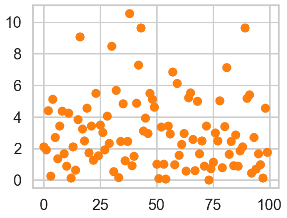
Calculating simulated posterior statistics
def sbc_rank(source_param, param_post, thin):
return np.sum(source_param < param_post[::thin])
def z_scores_func(source_param, param_post):
mean_param = np.mean(param_post)
std_param = np.std(param_post)
zs = np.abs(mean_param - source_param)/std_param
return zs
def shrinkages_func(std_source, param_post):
std_param = np.std(param_post)
zs = 1. - (std_param*std_param)/(std_source*std_source)
return zs summaries[0]| mean | sd | hdi_3% | hdi_97% | mcse_mean | mcse_sd | ess_bulk | ess_tail | r_hat | |
|---|---|---|---|---|---|---|---|---|---|
| lambda | 1.983 | 0.073 | 1.842 | 2.116 | 0.001 | 0.001 | 4935.0 | 7842.0 | 1.0 |
# posterior sensitivities analysis
z_scores = np.zeros(R)
shrinkages = np.zeros(R)
for i, s in enumerate(summaries):
post_mean_lbda = s['mean'].values[0]
#post_sd_lbda = s['sd'].values[0]
prior_sd_lbda = 4.0
print(simlamsmall[i], post_mean_lbda)
#z_scores[i] = np.abs((post_mean_lbda - simlamsmall[i]) / post_sd_lbda)
z_scores[i] = z_scores_func(simlamsmall[i], sbcpost[i,:])
#shrinkages[i] = 1 - (post_sd_lbda / prior_sd_lbda ) ** 2
shrinkages[i] = shrinkages_func(prior_sd_lbda, sbcpost[i,:])2.111266928021367 1.983
1.932998647207024 2.005
4.400051915764061 4.512
0.2527554008030767 0.238
5.1262197837410985 5.171
2.7245080319061077 2.736
1.3493566679183466 1.369
3.420549707886031 3.619
4.373336304636476 4.307
1.6895953459078676 1.64
0.8808698194859278 0.848
4.235806382865925 4.241
0.15470488015424785 0.134
2.109229822971398 2.006
0.6360915248331712 0.6
3.833767891769012 3.802
9.089977661040377 9.305
3.256252479967535 3.243
2.4829502512323467 2.315
4.551847307898459 4.642
1.7265747049824254 1.654
3.420549707886031 3.618
1.2678621010024038 1.23
5.490247320817458 5.703
1.5618806139031076 1.539
3.4910230901679324 3.706
3.0380215615978 3.115
1.932998647207024 2.005
4.0521435151822045 4.202
2.320609664834795 2.32
8.491152658590035 8.314
0.5508625015978591 0.532
5.679441239307266 5.656
0.16082693753253818 0.16
2.447575286209122 2.447
4.837594414428688 4.884
1.2391008080123218 1.235
2.447575286209122 2.447
10.56607999785445 10.606
0.9218970600638887 0.811
1.5069532840097837 1.548
4.890301774038264 4.757
7.284531851221643 7.379
9.632312230878224 9.692
3.1297039445229036 3.173
3.9313777936982888 3.99
2.9504039429675935 2.93
5.490247320817458 5.705
5.115765460754547 5.395
4.634430103502278 4.832
1.017526103206701 1.006
0.11506843109644287 0.112
3.360075644297961 3.334
1.0167633960073592 0.95
0.08405774262833993 0.077
3.42919734118176 3.481
2.9360044119607167 2.806
6.864395431077621 6.851
0.9862466314839445 0.955
6.140608124906582 6.427
1.5693971606480226 1.506
2.288104325597897 2.272
2.9629636538612925 2.958
0.5859568270229942 0.621
5.2275183169649155 5.319
5.525709193498758 5.641
2.591540004244523 2.503
0.5985710499862107 0.582
5.01513238556768 5.003
1.671089813597411 1.666
2.4817362275806096 2.398
0.8775540881235729 0.87
3.42919734118176 3.479
0.024857966742650554 0.008
0.7420935936854236 0.691
1.1528784147377564 1.08
2.9852751749407735 2.9
2.4953445525779863 2.603
5.046250330611539 5.015
0.80454444894067 0.797
3.3910363387303546 3.521
7.139968204682293 7.028
1.6341470446008042 1.682
2.4485667288293915 2.496
0.9228850122123043 0.954
2.8753664542603303 2.841
0.8775540881235729 0.872
1.8587011059069496 1.888
2.109229822971398 2.002
9.632312230878224 9.691
5.180308944518366 5.078
5.410964367263256 5.385
0.4447832076113479 0.432
2.7245080319061077 2.734
0.7118788869049837 0.776
1.671089813597411 1.666
0.9862466314839445 0.957
0.15470488015424785 0.134
4.551847307898459 4.645
1.7729992224175903 1.675Shrinkage Plot
plt.plot(shrinkages, z_scores, '.');
plt.xlim([0,1]);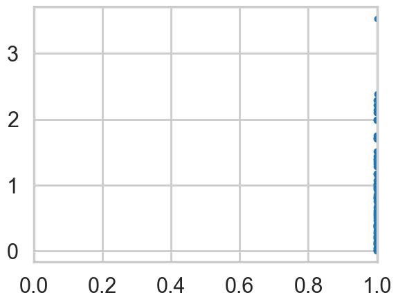
Simulation Based Callibration
ranks=np.empty(R, dtype='int')
for i, lam in enumerate(simlamsmall):
ranks[i] = sbc_rank(lam, sbcpost[i,:], 4)
ranksarray([ 110, 2492, 2534, 822, 1903, 1649, 1865, 2941, 811, 716, 739,
1487, 431, 246, 555, 1131, 2708, 1326, 68, 2366, 451, 2928,
774, 2879, 1084, 2959, 2373, 2501, 2747, 1502, 372, 890, 1261,
1378, 1463, 1939, 1395, 1470, 1798, 42, 2162, 364, 2210, 1943,
2043, 2172, 1209, 2882, 2967, 2873, 1217, 1236, 1183, 292, 875,
2150, 208, 1337, 795, 2971, 520, 1250, 1437, 2443, 2315, 2484,
416, 996, 1364, 1378, 464, 1282, 2058, 22, 369, 268, 537,
2714, 1154, 1249, 2734, 632, 2264, 2151, 2198, 1036, 1363, 1967,
262, 1928, 582, 1215, 1074, 1632, 2748, 1469, 872, 447, 2359,
247])# 3000 left over samples after thinning by 4, 3001 spots, 100 replications
sbc_low = stats.binom.ppf(0.005, R, 300.0 / 3000)
sbc_mid = stats.binom.ppf(0.5, R, 300.0 / 3000)
sbc_high = stats.binom.ppf(0.995, R, 300.0 / 3000)
plt.hist(ranks, bins=[300*x for x in range(11)]);
plt.axhline(sbc_low, 0,1, c='r')
plt.axhline(sbc_mid, 0,1, c='r')
plt.axhline(sbc_high, 0,1, c='r')<matplotlib.lines.Line2D at 0x15c0bf0e0>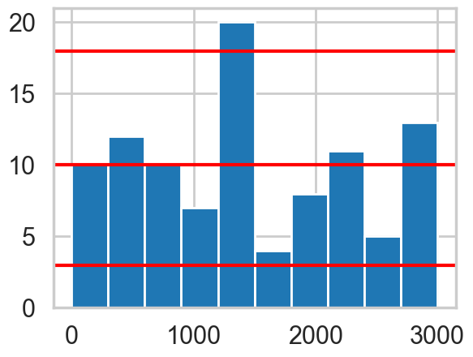
Posterior Predictive Check
mpo = model_poisson1(4, y.shape[0], observed=y)
with mpo:
samples = pm.sample(3000, tune=1000)
posterior = samples.posterior['lambda'].values.flatten()Initializing NUTS using jitter+adapt_diag...Multiprocess sampling (4 chains in 4 jobs)NUTS: [lambda]/Users/rahul/Library/Caches/uv/archive-v0/WJgPh5nRFVZl0DU9tt8M7/lib/python3.14/site-packages/rich/live.py:260:
UserWarning: install "ipywidgets" for Jupyter support
warnings.warn('install "ipywidgets" for Jupyter support')
Sampling 4 chains for 1_000 tune and 3_000 draw iterations (4_000 + 12_000 draws total) took 1 seconds.az.plot_trace(samples);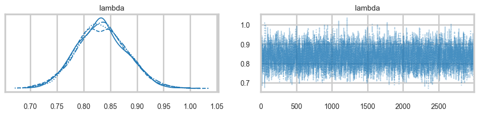
with mpo:
samples_ppc = pm.sample_posterior_predictive(samples)Sampling: [obsv]/Users/rahul/Library/Caches/uv/archive-v0/WJgPh5nRFVZl0DU9tt8M7/lib/python3.14/site-packages/rich/live.py:260:
UserWarning: install "ipywidgets" for Jupyter support
warnings.warn('install "ipywidgets" for Jupyter support')
samples_ppc.posterior_predictive['obsv'].values.reshape(-1, N).shape(12000, 365)ppc_obsv = samples_ppc.posterior_predictive['obsv'].values.reshape(-1, N)
plt.hist(y, density=True, histtype='step', lw=3, label="y");
plt.hist(ppc_obsv[0,:], density=True, histtype='step', lw=3, label="pp")
plt.legend();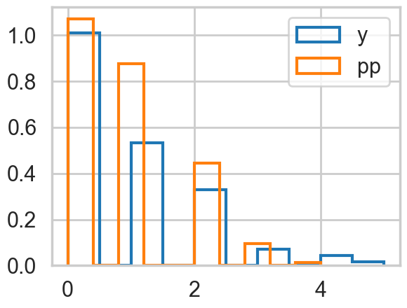
zeros = np.zeros(ppc_obsv.shape[0])
for i in range(ppc_obsv.shape[0]):
zeros[i] = np.sum(ppc_obsv[i,:]==0)
plt.hist(zeros)
plt.axvline(np.sum(y==0), 0,1, c='r')<matplotlib.lines.Line2D at 0x16630c980>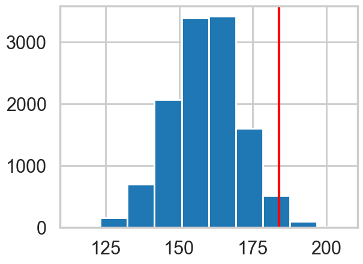
A second model: 0 inflated poisson
The likelihood that combines the two cases considered above is called the Zero Inflated poisson. It has two arguments, the Poisson rate parameter, and the proportion of poisson variates (theta and psi in pymc).
def model_0ipoisson1(sd, shp, observed=None):
with pm.Model() as model:
lam=pm.HalfNormal("lambda", sigma=sd)
theta=pm.Beta("theta", 1,1)
like = pm.ZeroInflatedPoisson("obsv", mu=lam, psi=theta, shape = shp, observed=observed)
return modelmodel2 = model_0ipoisson1(4, y.shape[0], observed=y)
with model2:
trace2 = pm.sample(3000, tune=1000)Initializing NUTS using jitter+adapt_diag...Multiprocess sampling (4 chains in 4 jobs)NUTS: [lambda, theta]/Users/rahul/Library/Caches/uv/archive-v0/WJgPh5nRFVZl0DU9tt8M7/lib/python3.14/site-packages/rich/live.py:260:
UserWarning: install "ipywidgets" for Jupyter support
warnings.warn('install "ipywidgets" for Jupyter support')
Sampling 4 chains for 1_000 tune and 3_000 draw iterations (4_000 + 12_000 draws total) took 2 seconds.az.plot_trace(trace2);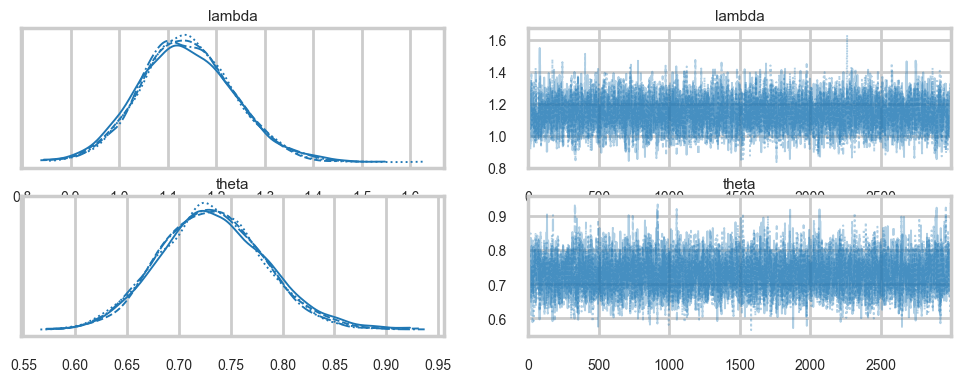
az.summary(trace2)| mean | sd | hdi_3% | hdi_97% | mcse_mean | mcse_sd | ess_bulk | ess_tail | r_hat | |
|---|---|---|---|---|---|---|---|---|---|
| lambda | 1.140 | 0.096 | 0.960 | 1.321 | 0.001 | 0.001 | 4169.0 | 4943.0 | 1.0 |
| theta | 0.732 | 0.051 | 0.639 | 0.830 | 0.001 | 0.001 | 4354.0 | 4905.0 | 1.0 |
Identifiability Problems through simple prior-predictive checks
plt.scatter(trace2.posterior['lambda'].values.flatten(), trace2.posterior['theta'].values.flatten())<matplotlib.collections.PathCollection at 0x1688a92b0>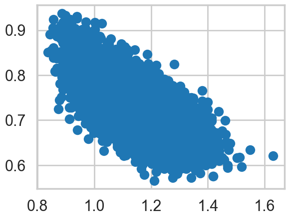
az.plot_autocorr(trace2);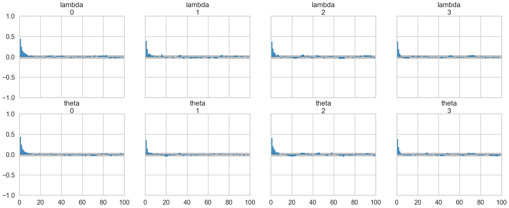
Sampling some prior predictives
We sample those likely to be troublesome, especially high drunkenness probability, and low productivity
simu_lbdas2 = stats.halfnorm(scale=4).rvs(500)
simu_betas2 = stats.beta(1,1).rvs(500)
simy2 = np.zeros((500, N))
for i in range(500):
simu_bern = stats.bernoulli(1 - simu_betas2[i]).rvs(N).astype('bool')
indices = np.array(range(N))[simu_bern]
simy2[i,indices] = stats.poisson(simu_lbdas2[i]).rvs(indices.shape[0])simy2[0,:].shape, simy2[53,:].shape((365,), (365,))lowlamindices = np.argsort(simu_lbdas2)[:5]
lowlamindices, simu_lbdas2[lowlamindices](array([ 40, 35, 306, 383, 61]),
array([0.00476178, 0.06324101, 0.0638531 , 0.08554573, 0.08890198]))highpindices = np.argsort(simu_betas2)[-5:]
highpindices, simu_betas2[highpindices](array([ 39, 109, 316, 304, 477]),
array([0.99223398, 0.99377115, 0.99615021, 0.99720552, 0.99725129]))reps_to_sample = np.concatenate((lowlamindices, highpindices))
reps_to_samplearray([ 40, 35, 306, 383, 61, 39, 109, 316, 304, 477])reps_to_sample2 = np.concatenate((np.argsort(simu_lbdas2)[181:186], np.argsort(simu_betas2)[181:186]))for j in reps_to_sample:
m = model_0ipoisson1(4, N, observed=simy2[j,:])
t = pm.sample(3000, tune=1000, model=m)Initializing NUTS using jitter+adapt_diag...Multiprocess sampling (4 chains in 4 jobs)NUTS: [lambda, theta]/Users/rahul/Library/Caches/uv/archive-v0/WJgPh5nRFVZl0DU9tt8M7/lib/python3.14/site-packages/rich/live.py:260:
UserWarning: install "ipywidgets" for Jupyter support
warnings.warn('install "ipywidgets" for Jupyter support')
Sampling 4 chains for 1_000 tune and 3_000 draw iterations (4_000 + 12_000 draws total) took 2 seconds.There were 81 divergences after tuning. Increase `target_accept` or reparameterize.Initializing NUTS using jitter+adapt_diag...Multiprocess sampling (4 chains in 4 jobs)NUTS: [lambda, theta]/Users/rahul/Library/Caches/uv/archive-v0/WJgPh5nRFVZl0DU9tt8M7/lib/python3.14/site-packages/rich/live.py:260:
UserWarning: install "ipywidgets" for Jupyter support
warnings.warn('install "ipywidgets" for Jupyter support')
Sampling 4 chains for 1_000 tune and 3_000 draw iterations (4_000 + 12_000 draws total) took 2 seconds.Initializing NUTS using jitter+adapt_diag...Multiprocess sampling (4 chains in 4 jobs)NUTS: [lambda, theta]/Users/rahul/Library/Caches/uv/archive-v0/WJgPh5nRFVZl0DU9tt8M7/lib/python3.14/site-packages/rich/live.py:260:
UserWarning: install "ipywidgets" for Jupyter support
warnings.warn('install "ipywidgets" for Jupyter support')
Sampling 4 chains for 1_000 tune and 3_000 draw iterations (4_000 + 12_000 draws total) took 2 seconds.Initializing NUTS using jitter+adapt_diag...Multiprocess sampling (4 chains in 4 jobs)NUTS: [lambda, theta]/Users/rahul/Library/Caches/uv/archive-v0/WJgPh5nRFVZl0DU9tt8M7/lib/python3.14/site-packages/rich/live.py:260:
UserWarning: install "ipywidgets" for Jupyter support
warnings.warn('install "ipywidgets" for Jupyter support')
Sampling 4 chains for 1_000 tune and 3_000 draw iterations (4_000 + 12_000 draws total) took 2 seconds.Initializing NUTS using jitter+adapt_diag...Multiprocess sampling (4 chains in 4 jobs)NUTS: [lambda, theta]/Users/rahul/Library/Caches/uv/archive-v0/WJgPh5nRFVZl0DU9tt8M7/lib/python3.14/site-packages/rich/live.py:260:
UserWarning: install "ipywidgets" for Jupyter support
warnings.warn('install "ipywidgets" for Jupyter support')
Sampling 4 chains for 1_000 tune and 3_000 draw iterations (4_000 + 12_000 draws total) took 2 seconds.There were 3 divergences after tuning. Increase `target_accept` or reparameterize.Initializing NUTS using jitter+adapt_diag...Multiprocess sampling (4 chains in 4 jobs)NUTS: [lambda, theta]/Users/rahul/Library/Caches/uv/archive-v0/WJgPh5nRFVZl0DU9tt8M7/lib/python3.14/site-packages/rich/live.py:260:
UserWarning: install "ipywidgets" for Jupyter support
warnings.warn('install "ipywidgets" for Jupyter support')
Sampling 4 chains for 1_000 tune and 3_000 draw iterations (4_000 + 12_000 draws total) took 1 seconds.Initializing NUTS using jitter+adapt_diag...Multiprocess sampling (4 chains in 4 jobs)NUTS: [lambda, theta]/Users/rahul/Library/Caches/uv/archive-v0/WJgPh5nRFVZl0DU9tt8M7/lib/python3.14/site-packages/rich/live.py:260:
UserWarning: install "ipywidgets" for Jupyter support
warnings.warn('install "ipywidgets" for Jupyter support')
Sampling 4 chains for 1_000 tune and 3_000 draw iterations (4_000 + 12_000 draws total) took 1 seconds.Initializing NUTS using jitter+adapt_diag...Multiprocess sampling (4 chains in 4 jobs)NUTS: [lambda, theta]/Users/rahul/Library/Caches/uv/archive-v0/WJgPh5nRFVZl0DU9tt8M7/lib/python3.14/site-packages/rich/live.py:260:
UserWarning: install "ipywidgets" for Jupyter support
warnings.warn('install "ipywidgets" for Jupyter support')
Sampling 4 chains for 1_000 tune and 3_000 draw iterations (4_000 + 12_000 draws total) took 2 seconds.There were 44 divergences after tuning. Increase `target_accept` or reparameterize.Initializing NUTS using jitter+adapt_diag...Multiprocess sampling (4 chains in 4 jobs)NUTS: [lambda, theta]/Users/rahul/Library/Caches/uv/archive-v0/WJgPh5nRFVZl0DU9tt8M7/lib/python3.14/site-packages/rich/live.py:260:
UserWarning: install "ipywidgets" for Jupyter support
warnings.warn('install "ipywidgets" for Jupyter support')
Sampling 4 chains for 1_000 tune and 3_000 draw iterations (4_000 + 12_000 draws total) took 2 seconds.There were 43 divergences after tuning. Increase `target_accept` or reparameterize.Initializing NUTS using jitter+adapt_diag...Multiprocess sampling (4 chains in 4 jobs)NUTS: [lambda, theta]/Users/rahul/Library/Caches/uv/archive-v0/WJgPh5nRFVZl0DU9tt8M7/lib/python3.14/site-packages/rich/live.py:260:
UserWarning: install "ipywidgets" for Jupyter support
warnings.warn('install "ipywidgets" for Jupyter support')
Sampling 4 chains for 1_000 tune and 3_000 draw iterations (4_000 + 12_000 draws total) took 2 seconds.There were 46 divergences after tuning. Increase `target_accept` or reparameterize.for j in reps_to_sample2:
m = model_0ipoisson1(4, N, observed=simy2[j,:])
t = pm.sample(3000, tune=1000, model=m)Initializing NUTS using jitter+adapt_diag...Multiprocess sampling (4 chains in 4 jobs)NUTS: [lambda, theta]/Users/rahul/Library/Caches/uv/archive-v0/WJgPh5nRFVZl0DU9tt8M7/lib/python3.14/site-packages/rich/live.py:260:
UserWarning: install "ipywidgets" for Jupyter support
warnings.warn('install "ipywidgets" for Jupyter support')
Sampling 4 chains for 1_000 tune and 3_000 draw iterations (4_000 + 12_000 draws total) took 1 seconds.Initializing NUTS using jitter+adapt_diag...Multiprocess sampling (4 chains in 4 jobs)NUTS: [lambda, theta]/Users/rahul/Library/Caches/uv/archive-v0/WJgPh5nRFVZl0DU9tt8M7/lib/python3.14/site-packages/rich/live.py:260:
UserWarning: install "ipywidgets" for Jupyter support
warnings.warn('install "ipywidgets" for Jupyter support')
Sampling 4 chains for 1_000 tune and 3_000 draw iterations (4_000 + 12_000 draws total) took 1 seconds.Initializing NUTS using jitter+adapt_diag...Multiprocess sampling (4 chains in 4 jobs)NUTS: [lambda, theta]/Users/rahul/Library/Caches/uv/archive-v0/WJgPh5nRFVZl0DU9tt8M7/lib/python3.14/site-packages/rich/live.py:260:
UserWarning: install "ipywidgets" for Jupyter support
warnings.warn('install "ipywidgets" for Jupyter support')
Sampling 4 chains for 1_000 tune and 3_000 draw iterations (4_000 + 12_000 draws total) took 1 seconds.Initializing NUTS using jitter+adapt_diag...Multiprocess sampling (4 chains in 4 jobs)NUTS: [lambda, theta]/Users/rahul/Library/Caches/uv/archive-v0/WJgPh5nRFVZl0DU9tt8M7/lib/python3.14/site-packages/rich/live.py:260:
UserWarning: install "ipywidgets" for Jupyter support
warnings.warn('install "ipywidgets" for Jupyter support')
Sampling 4 chains for 1_000 tune and 3_000 draw iterations (4_000 + 12_000 draws total) took 2 seconds.There was 1 divergence after tuning. Increase `target_accept` or reparameterize.Initializing NUTS using jitter+adapt_diag...Multiprocess sampling (4 chains in 4 jobs)NUTS: [lambda, theta]/Users/rahul/Library/Caches/uv/archive-v0/WJgPh5nRFVZl0DU9tt8M7/lib/python3.14/site-packages/rich/live.py:260:
UserWarning: install "ipywidgets" for Jupyter support
warnings.warn('install "ipywidgets" for Jupyter support')
Sampling 4 chains for 1_000 tune and 3_000 draw iterations (4_000 + 12_000 draws total) took 2 seconds.There were 38 divergences after tuning. Increase `target_accept` or reparameterize.Initializing NUTS using jitter+adapt_diag...Multiprocess sampling (4 chains in 4 jobs)NUTS: [lambda, theta]/Users/rahul/Library/Caches/uv/archive-v0/WJgPh5nRFVZl0DU9tt8M7/lib/python3.14/site-packages/rich/live.py:260:
UserWarning: install "ipywidgets" for Jupyter support
warnings.warn('install "ipywidgets" for Jupyter support')
Sampling 4 chains for 1_000 tune and 3_000 draw iterations (4_000 + 12_000 draws total) took 1 seconds.Initializing NUTS using jitter+adapt_diag...Multiprocess sampling (4 chains in 4 jobs)NUTS: [lambda, theta]/Users/rahul/Library/Caches/uv/archive-v0/WJgPh5nRFVZl0DU9tt8M7/lib/python3.14/site-packages/rich/live.py:260:
UserWarning: install "ipywidgets" for Jupyter support
warnings.warn('install "ipywidgets" for Jupyter support')
Sampling 4 chains for 1_000 tune and 3_000 draw iterations (4_000 + 12_000 draws total) took 2 seconds.There were 10 divergences after tuning. Increase `target_accept` or reparameterize.Initializing NUTS using jitter+adapt_diag...Multiprocess sampling (4 chains in 4 jobs)NUTS: [lambda, theta]/Users/rahul/Library/Caches/uv/archive-v0/WJgPh5nRFVZl0DU9tt8M7/lib/python3.14/site-packages/rich/live.py:260:
UserWarning: install "ipywidgets" for Jupyter support
warnings.warn('install "ipywidgets" for Jupyter support')
Sampling 4 chains for 1_000 tune and 3_000 draw iterations (4_000 + 12_000 draws total) took 1 seconds.Initializing NUTS using jitter+adapt_diag...Multiprocess sampling (4 chains in 4 jobs)NUTS: [lambda, theta]/Users/rahul/Library/Caches/uv/archive-v0/WJgPh5nRFVZl0DU9tt8M7/lib/python3.14/site-packages/rich/live.py:260:
UserWarning: install "ipywidgets" for Jupyter support
warnings.warn('install "ipywidgets" for Jupyter support')
Sampling 4 chains for 1_000 tune and 3_000 draw iterations (4_000 + 12_000 draws total) took 1 seconds.Initializing NUTS using jitter+adapt_diag...Multiprocess sampling (4 chains in 4 jobs)NUTS: [lambda, theta]/Users/rahul/Library/Caches/uv/archive-v0/WJgPh5nRFVZl0DU9tt8M7/lib/python3.14/site-packages/rich/live.py:260:
UserWarning: install "ipywidgets" for Jupyter support
warnings.warn('install "ipywidgets" for Jupyter support')
Sampling 4 chains for 1_000 tune and 3_000 draw iterations (4_000 + 12_000 draws total) took 2 seconds.In search of a better model
Lets throw in some domain expertise
A survey of Abbey Heads has told us, that the most a monk would produce, even at low productivity, one manuscript a day.
Choosing better Priors
cdfig = lambda alpha, beta: stats.invgamma(alpha,scale=beta).cdf(1)asp = np.linspace(2,5,100)
bsp = np.linspace(7,10,100)
aa,bb = np.meshgrid(asp, bsp)
aaarray([[2. , 2.03030303, 2.06060606, ..., 4.93939394, 4.96969697,
5. ],
[2. , 2.03030303, 2.06060606, ..., 4.93939394, 4.96969697,
5. ],
[2. , 2.03030303, 2.06060606, ..., 4.93939394, 4.96969697,
5. ],
...,
[2. , 2.03030303, 2.06060606, ..., 4.93939394, 4.96969697,
5. ],
[2. , 2.03030303, 2.06060606, ..., 4.93939394, 4.96969697,
5. ],
[2. , 2.03030303, 2.06060606, ..., 4.93939394, 4.96969697,
5. ]], shape=(100, 100))z=cdfig(aa,bb)plt.contourf(aa, bb, z, 20, cmap='RdGy')
plt.colorbar();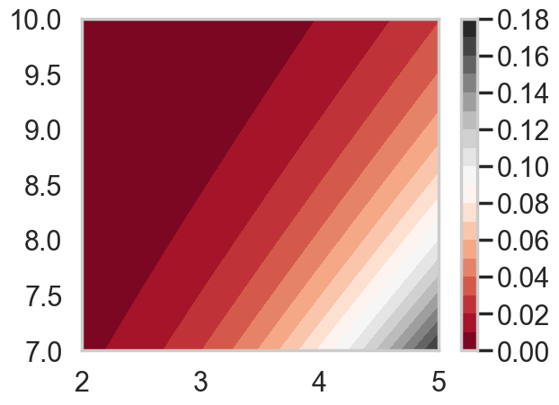
lbda = np.linspace(0, 20, num=int(20/0.001))
alpha=3.5
beta=8.5
pdf = stats.invgamma(alpha, scale=beta)
plt.plot(lbda, pdf.pdf(lbda), c=c_dark_highlight, lw=2)
plt.xlabel("lambda"); plt.ylabel("Prior Density"); plt.yticks([]);
plt.axvline(1, 0, 1, c="blue")<matplotlib.lines.Line2D at 0x15a2a6e40>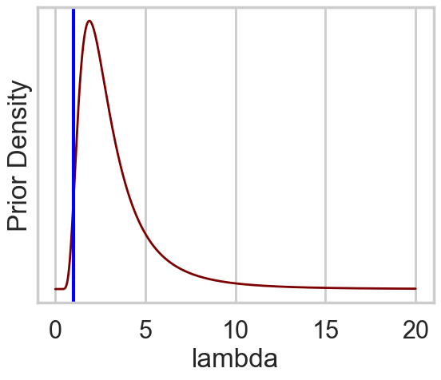
stats.invgamma(alpha, scale=beta).cdf(1.), 1 - stats.invgamma(alpha, scale=beta).cdf(9.)(np.float64(0.01739618256912451), np.float64(0.0342667918309546))theta = np.linspace(0, 1, num=int(1/0.001))
curve=1.4
pdf = stats.beta(curve, curve)
plt.plot(theta, pdf.pdf(theta), c=c_dark_highlight, lw=2)
plt.xlabel("theta"); plt.ylabel("Prior Density"); plt.yticks([]);
plt.axvline(0.01, 0, 1, c="blue")<matplotlib.lines.Line2D at 0x15c1b8ec0>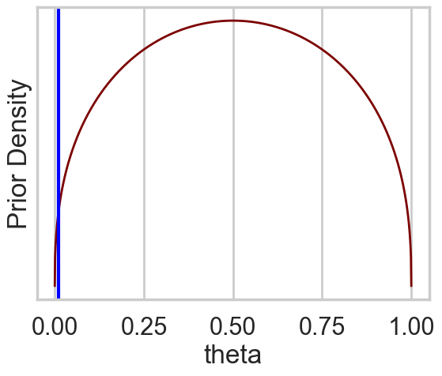
stats.beta(curve, curve).cdf(0.2), 1 - stats.beta(curve, curve).cdf(0.8)(np.float64(0.15200913356356724), np.float64(0.15200913356356716))def model_0ipoisson2(alpha, beta, curve, shp, observed=None):
with pm.Model() as model:
lam = pm.InverseGamma("lambda",alpha=alpha,beta=beta)
theta=pm.Beta("theta", curve, curve)
like = pm.ZeroInflatedPoisson("obsv", mu=lam, psi=theta, shape = shp, observed=observed)
return modelQuick Posterior Predictive
We will in a later notebook, do the whole workflow, but in the meanwhile, here is the posterior predictive
model3 = model_0ipoisson2(alpha, beta, curve, y.shape[0], observed=y)
with model3:
trace3 = pm.sample(3000, tune=1000)Initializing NUTS using jitter+adapt_diag...Multiprocess sampling (4 chains in 4 jobs)NUTS: [lambda, theta]/Users/rahul/Library/Caches/uv/archive-v0/WJgPh5nRFVZl0DU9tt8M7/lib/python3.14/site-packages/rich/live.py:260:
UserWarning: install "ipywidgets" for Jupyter support
warnings.warn('install "ipywidgets" for Jupyter support')
Sampling 4 chains for 1_000 tune and 3_000 draw iterations (4_000 + 12_000 draws total) took 2 seconds.az.summary(trace3)| mean | sd | hdi_3% | hdi_97% | mcse_mean | mcse_sd | ess_bulk | ess_tail | r_hat | |
|---|---|---|---|---|---|---|---|---|---|
| lambda | 1.166 | 0.094 | 0.988 | 1.339 | 0.001 | 0.001 | 5082.0 | 5710.0 | 1.0 |
| theta | 0.721 | 0.049 | 0.629 | 0.814 | 0.001 | 0.000 | 4976.0 | 5159.0 | 1.0 |
az.plot_trace(trace3);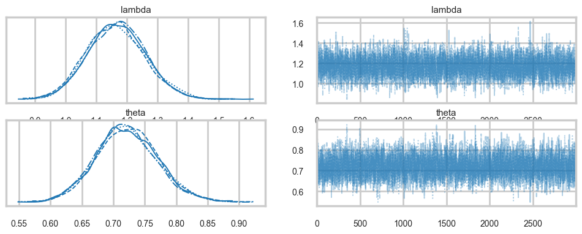
Sampling some prior predictives
Once again, we are looking at those likely to be troublesome…
simu_lbdas3 = stats.invgamma(alpha, scale=beta).rvs(500)
simu_betas3 = stats.beta(curve, curve).rvs(500)
simy3 = np.zeros((500, N))
for i in range(500):
simu_bern = stats.bernoulli(1 - simu_betas3[i]).rvs(N).astype('bool')
indices = np.array(range(N))[simu_bern]
simy3[i,indices] = stats.poisson(simu_lbdas3[i]).rvs(indices.shape[0])lowlamindices = np.argsort(simu_lbdas2)[:5]
lowlamindices, simu_lbdas2[lowlamindices](array([ 40, 35, 306, 383, 61]),
array([0.00476178, 0.06324101, 0.0638531 , 0.08554573, 0.08890198]))for j in lowlamindices:
m = model_0ipoisson2(alpha, beta, curve, N, observed=simy2[j,:])
t = pm.sample(3000, tune=1000, model=m)Initializing NUTS using jitter+adapt_diag...Multiprocess sampling (4 chains in 4 jobs)NUTS: [lambda, theta]/Users/rahul/Library/Caches/uv/archive-v0/WJgPh5nRFVZl0DU9tt8M7/lib/python3.14/site-packages/rich/live.py:260:
UserWarning: install "ipywidgets" for Jupyter support
warnings.warn('install "ipywidgets" for Jupyter support')
Sampling 4 chains for 1_000 tune and 3_000 draw iterations (4_000 + 12_000 draws total) took 2 seconds.Initializing NUTS using jitter+adapt_diag...Multiprocess sampling (4 chains in 4 jobs)NUTS: [lambda, theta]/Users/rahul/Library/Caches/uv/archive-v0/WJgPh5nRFVZl0DU9tt8M7/lib/python3.14/site-packages/rich/live.py:260:
UserWarning: install "ipywidgets" for Jupyter support
warnings.warn('install "ipywidgets" for Jupyter support')
Sampling 4 chains for 1_000 tune and 3_000 draw iterations (4_000 + 12_000 draws total) took 2 seconds.Initializing NUTS using jitter+adapt_diag...Multiprocess sampling (4 chains in 4 jobs)NUTS: [lambda, theta]/Users/rahul/Library/Caches/uv/archive-v0/WJgPh5nRFVZl0DU9tt8M7/lib/python3.14/site-packages/rich/live.py:260:
UserWarning: install "ipywidgets" for Jupyter support
warnings.warn('install "ipywidgets" for Jupyter support')
Sampling 4 chains for 1_000 tune and 3_000 draw iterations (4_000 + 12_000 draws total) took 2 seconds.Initializing NUTS using jitter+adapt_diag...Multiprocess sampling (4 chains in 4 jobs)NUTS: [lambda, theta]/Users/rahul/Library/Caches/uv/archive-v0/WJgPh5nRFVZl0DU9tt8M7/lib/python3.14/site-packages/rich/live.py:260:
UserWarning: install "ipywidgets" for Jupyter support
warnings.warn('install "ipywidgets" for Jupyter support')
Sampling 4 chains for 1_000 tune and 3_000 draw iterations (4_000 + 12_000 draws total) took 2 seconds.Initializing NUTS using jitter+adapt_diag...Multiprocess sampling (4 chains in 4 jobs)NUTS: [lambda, theta]/Users/rahul/Library/Caches/uv/archive-v0/WJgPh5nRFVZl0DU9tt8M7/lib/python3.14/site-packages/rich/live.py:260:
UserWarning: install "ipywidgets" for Jupyter support
warnings.warn('install "ipywidgets" for Jupyter support')
Sampling 4 chains for 1_000 tune and 3_000 draw iterations (4_000 + 12_000 draws total) took 2 seconds.highpindices = np.argsort(simu_betas2)[-5:]
highpindices, simu_betas2[highpindices](array([ 39, 109, 316, 304, 477]),
array([0.99223398, 0.99377115, 0.99615021, 0.99720552, 0.99725129]))for j in highpindices:
m = model_0ipoisson2(alpha, beta, curve, N, observed=simy2[j,:])
t = pm.sample(3000, tune=1000, model=m)Initializing NUTS using jitter+adapt_diag...Multiprocess sampling (4 chains in 4 jobs)NUTS: [lambda, theta]/Users/rahul/Library/Caches/uv/archive-v0/WJgPh5nRFVZl0DU9tt8M7/lib/python3.14/site-packages/rich/live.py:260:
UserWarning: install "ipywidgets" for Jupyter support
warnings.warn('install "ipywidgets" for Jupyter support')
Sampling 4 chains for 1_000 tune and 3_000 draw iterations (4_000 + 12_000 draws total) took 1 seconds.Initializing NUTS using jitter+adapt_diag...Multiprocess sampling (4 chains in 4 jobs)NUTS: [lambda, theta]/Users/rahul/Library/Caches/uv/archive-v0/WJgPh5nRFVZl0DU9tt8M7/lib/python3.14/site-packages/rich/live.py:260:
UserWarning: install "ipywidgets" for Jupyter support
warnings.warn('install "ipywidgets" for Jupyter support')
Sampling 4 chains for 1_000 tune and 3_000 draw iterations (4_000 + 12_000 draws total) took 1 seconds.Initializing NUTS using jitter+adapt_diag...Multiprocess sampling (4 chains in 4 jobs)NUTS: [lambda, theta]/Users/rahul/Library/Caches/uv/archive-v0/WJgPh5nRFVZl0DU9tt8M7/lib/python3.14/site-packages/rich/live.py:260:
UserWarning: install "ipywidgets" for Jupyter support
warnings.warn('install "ipywidgets" for Jupyter support')
Sampling 4 chains for 1_000 tune and 3_000 draw iterations (4_000 + 12_000 draws total) took 2 seconds.There was 1 divergence after tuning. Increase `target_accept` or reparameterize.Initializing NUTS using jitter+adapt_diag...Multiprocess sampling (4 chains in 4 jobs)NUTS: [lambda, theta]/Users/rahul/Library/Caches/uv/archive-v0/WJgPh5nRFVZl0DU9tt8M7/lib/python3.14/site-packages/rich/live.py:260:
UserWarning: install "ipywidgets" for Jupyter support
warnings.warn('install "ipywidgets" for Jupyter support')
Sampling 4 chains for 1_000 tune and 3_000 draw iterations (4_000 + 12_000 draws total) took 2 seconds.Initializing NUTS using jitter+adapt_diag...Multiprocess sampling (4 chains in 4 jobs)NUTS: [lambda, theta]/Users/rahul/Library/Caches/uv/archive-v0/WJgPh5nRFVZl0DU9tt8M7/lib/python3.14/site-packages/rich/live.py:260:
UserWarning: install "ipywidgets" for Jupyter support
warnings.warn('install "ipywidgets" for Jupyter support')
Sampling 4 chains for 1_000 tune and 3_000 draw iterations (4_000 + 12_000 draws total) took 1 seconds.